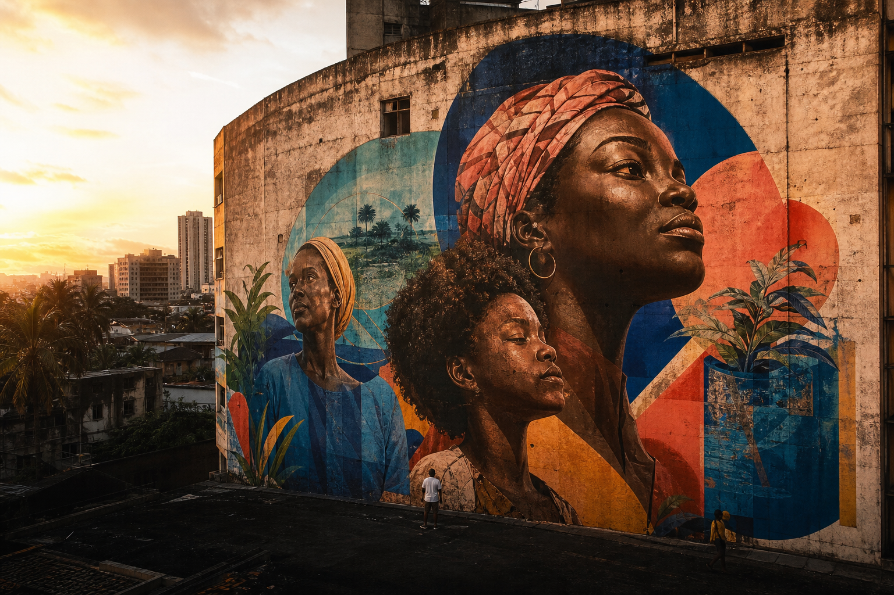

ACERVO VIVO
ARTE URBANA · IMPACTO REAL
A cidade
fala. Escute.
Um atlas vivo de intervenções que transformam muros, territórios e futuros.

RECIFE · PE01
Raízes do AmanhãColetivo Aurora, 2025
ARTE URBANA · IMPACTO REAL
Um atlas vivo de intervenções que transformam muros, territórios e futuros.

RECIFE · PEACERVO VIVO